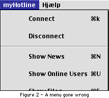

| Pros: Provides many enhancements to RB's menu, and it can be used in popupmenus and contextual menus also. Cons: It's not for the RB beginner, and the docs do not provide a simple How To. But it does include a lot examples.
|
MenuLib
| Author: Björn Erikson Price: $15 Download: Bjorn's Site |
 MenuLib
is (as the name says) a plugin that provides extra functions to your projects menubars.
With it you can (amoung other things) add marks (*) and icons to menu items. You
can to this to all the menus that REALbasic is capable of making, like popup menus,
contextual menus, etc. I was able to make a complete copy of the Hotline menu. See
Figure 1.
MenuLib
is (as the name says) a plugin that provides extra functions to your projects menubars.
With it you can (amoung other things) add marks (*) and icons to menu items. You
can to this to all the menus that REALbasic is capable of making, like popup menus,
contextual menus, etc. I was able to make a complete copy of the Hotline menu. See
Figure 1.
The way you add icons or marks to a menu is kinda simple, The first
thing you do is to add internal resources to your project by dragging them in from
the desktop. The resource must contain a "CICN" or "ICON" proberty
or else your menu will look quite strange (See Figure 2). When
you have a resource fork in your project, it's time to move on to the code.
First you create a MenuHandle. Then, you must find the menu you wish to play with. When you have a Menu Handle thet represent the menu you want to edit, you can use a simple syntax like SetItemIcon myMenu,1,411-256.
The commands are in the form: MethodName MenuHandle, NumberOfMenuItem, IconNumber. The smart reader may notice that the IconNumber part is a little strange, it's IconID-256. So if the menu icon should be 241 the code would be 241-256. To be honest I am not quite sure why that is, but I think it has something to do with the way the Mac gives resources ID's.
MenuLib has quite a few features, but it's not a good choice for the
RB beginner. When it comes to price, you should rember that you are paying for all
of Einhugur's plugins and classes. Both the ones that are here now, and the ones
that will be avaliable later. To sum up: MenuLib does what it's suposed to do, nothing
more, nothing less.
- Review by Oliver Kofoed Pedesen
| Pros: Provides many enhancements to RB's menu, and it can be used in popupmenus and contextual menus also. Cons: It's not for the RB beginner, and the docs do not provide a simple How To. But it does include a lot examples.
|